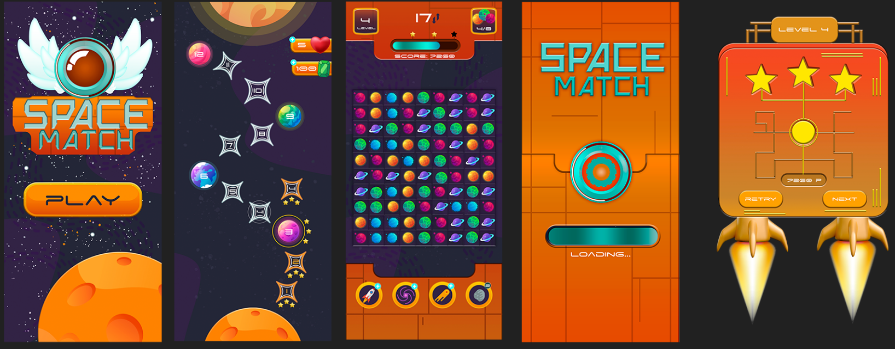

As a video game developer based in Barcelona, I combine my love for technology with my passion for gaming and design. I thrive on creating user-centered interfaces, leveraging my creativity and problem-solving skills to craft engaging and beautiful digital experiences. I'm always seeking new challenges that keep me motivated and fully engaged.
Description: During my internship at Petoons Studio, I was responsible for identifying, documenting, and tracking bugs throughout various stages of the game's development. I collaborated closely with the development team to ensure the highest quality of the final product, executing manual tests and actively contributing to the continuous enhancement of QA processes
Responsabilities:
Functionality tasks: Executing various tests to identify, document, and report bugs, errors, and issues within the project.
Compatibility tasks: Testing the project across multiple platforms (PC, Xbox, PlayStation, Switch) to ensure expected quality and performance standards are met on each.
Performance tasks: Identifying, documenting, and reporting performance issues across all platforms.
Localization tasks: Verifying localization accuracy and identifying issues across different languages.
Usability tasks: Evaluating the design, usability, and user experience to ensure optimal user interaction and satisfaction.
Title under NDA
"I contributed to the quality assurance of an unannounced game at Petoons Studio, currently under a non-disclosure agreement. My work included extensive testing across various platforms, ensuring the game's quality and performance met the highest standards."
Personal Projects and Video Games
UI/UX Projects
"Project L" (2XKO) UI concept
For my first personal UI/UX project, I decided to design an interface concept for Riot Games fighting game, Project L,
which had been announced but with no visual details revealed at the time. This project allowed me to explore and implement new UI techniques
using a combination of tools:
SPACE MATCH - Mobile Match 3 UI Concept
This project consisted of developing a UI concept for a match-3 game called Space Match.
The goal was to create an attractive, intuitive and functional interface for mobile devices, while keeping the gameplay fast and fun.
I used Adobe Photoshop and Illustrator to create the visual elements of the game, such as buttons, icons, and loading screens.
I also used After Effects to animate menu interactions and transition effects, creating a smoother and more engaging experience for the player.

UI design in mHealth Applications: Analysis of mHealth applications and creation of an online library
This Project focuses on analyzing mobile applications in the health sector, specifically examining
their user interface design, usability, and user experience. A comprehensive evaluation was conducted on various
health-related mobile applications using a Likert scale-based checklist. The applications were classified into different categories,
and a web page, "Biblioteca mSalut," was developed to facilitate easy access and consultation of these applications.
The Irregular is a fast-paced magic FPS where players must use their magical abilities to reclaim their lands.
Throughout the game, players can learn new spells, explore magical lands, face powerful bosses, and solve puzzles to advance the story.
The UI design focused on creating a visual experience that was consistent with the game's magical world, while maintaining intuitive usability.
The interface needed to be clear and accessible so that players could manage their magical
abilities and stats in the midst of the action without distractions. My goal was to design a UI that offered crucial information without hindering immersion and fast gameplay.
As a UI/UX Designer, I was responsible for the creation and implementation of the following elements:
Main Menu and Pause Menu: I designed a clear and functional interface that allows the player to navigate through the game options efficiently. Player HUD: I implemented the HUD (Heads-Up Display) elements, displaying the player's magic skills, health, and stats in a minimalist and clear way. Tutorial UI Elements: I designed the interactive components that guide players through the game mechanics, ensuring that new players can quickly learn the skills and controls.
One of the main challenges was integrating the necessary amount of information into the UI without overwhelming the player or distracting them from the fast and frenetic combat.
I managed to solve this by designing a clean and modular HUD, prioritizing the most crucial elements (such as health and active skills).
GoOn is a 2D hypercasual game for Android that challenges players to advance through obstacle-filled levels while using
their skills and reflexes. The player must avoid obstacles and traps that vary in difficulty as they progress through the different levels, making use of simple but precise controls.
As a UI/UX Designer, my responsibilities included:
Designing and implementing the main menu and pause menu.
Designing and implementing the player HUD, which provides key information in a non-intrusive way during gameplay.
As a Game & Level Designer, my responsibilities included:
Creating various levels and designing obstacles that progressively challenge the player.
Implementing post-processing effects and a particle system to enhance the visual and dynamic experience of the game.
One of the biggest challenges was designing levels that were accessible to casual players, but challenging enough to keep them engaged. I achieved this by adjusting
the progressive difficulty of the levels and adding engaging visual elements, such as particle effects and post-processing, that enhanced immersion without distracting the player.
"Retro Drift is an action video game in which players must defeat and dodge enemies by drifting their car.
The goal is to upgrade the car in the shop to make it more powerful and face increasingly difficult enemies.
This game was developed in just six days as part of the 'Juice Jam 2' event, where I was responsible for the entire development process.
The core of the game revolves around drifting. Players control a car that can dodge and defeat enemies through precise drifting maneuvers. As they progress, they can access a shop to upgrade the vehicle, adding more power and stamina, allowing them to take on stronger enemies.
During the development of Retro Drift, I took on all roles, including:
Gameplay Design: I implemented the drifting mechanics and car upgrades, fine-tuning the balance between difficulty and fun. Art and Graphics: I created the retro visuals, using a vibrant color palette and minimalist visual effects. Programming: I developed all of the game's code, implementing both the combat mechanics and the upgrade systems in the shop.
One of the biggest challenges was the limited time. I had to prioritize the most important features and maintain simplicity in the design, while ensuring that the game was entertaining and offered meaningful progression for the player. I opted for a minimalist retro graphical style that allowed me to keep the aesthetics appealing without spending too much time on complex details.
I developed Retro Drift using Unity as the main engine. For the graphics, I used Photoshop and a pixel-art style to give the game its signature
retro aesthetic. Additionally, I implemented the visual and particle effects directly in Unity to create a dynamic gameplay experience."
"SprintTech-LD is a first-person parkour game for PC, where every second counts. Players must master space and
time to advance through challenging levels at high speed. Featuring fast and fluid parkour mechanics, the game tests both players' physical and mental skills.
As a UI/UX Designer, my responsibilities included:
Main Menu and HUD Design and Implementation: Created a functional interface that provides the player with key information in a clear and straightforward manner. All 2D Art Design: Created all 2D visual elements, from menus to interactive elements. Particle Systems: Implemented dynamic visual effects to enhance visual aesthetics and player feedback. Quality Testing (QA): Conducted extensive testing of the game to ensure stability, detecting and resolving critical bugs.
Scale the Bubble is a simple yet challenging game, where players must control a bubble as it moves through obstacles. The key is to change the size of
the bubble to get around the obstacles, but be careful: if it is too big or too small, the bubble will burst! The goal is to advance as far as possible
while handling the controls with precision.
One of the biggest challenges was balancing the difficulty of the level so that players could learn the game mechanics naturally, but without making the
game too easy or too hard. To solve this, I adjusted the bubble physics and created a progressive difficulty curve. I also tested with different players
to optimize the controls and make sure they were intuitive.
Ludum Journal is an online magazine dedicated to the world of video games, focusing on game and level design. It is aimed at both beginners
looking to learn the fundamentals of game development, and experienced developers who want to delve deeper into advanced design and gameplay topics.
The goal of Ludum Journal is to provide valuable content for the game development community, covering topics such as level design,
gameplay mechanics, difficulty balance, and creating immersive experiences. The journal strives to be an educational resource for designers
at all levels of experience, offering practical advice and insights into the creative process in game development.
Research about visual accessibility in videogames
The objective of this work was to analyze the importance of visual accessibility in video games and identify the existing solutions
implemented that help people with visual disabilities to fully enjoy video games and perform a demo in a video game applying different learned techniques.